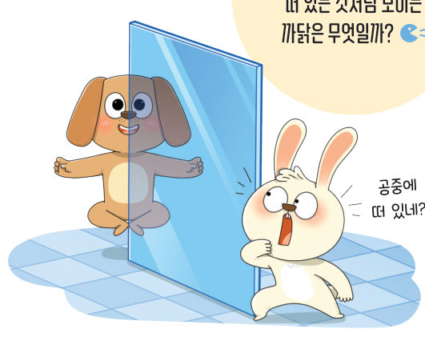
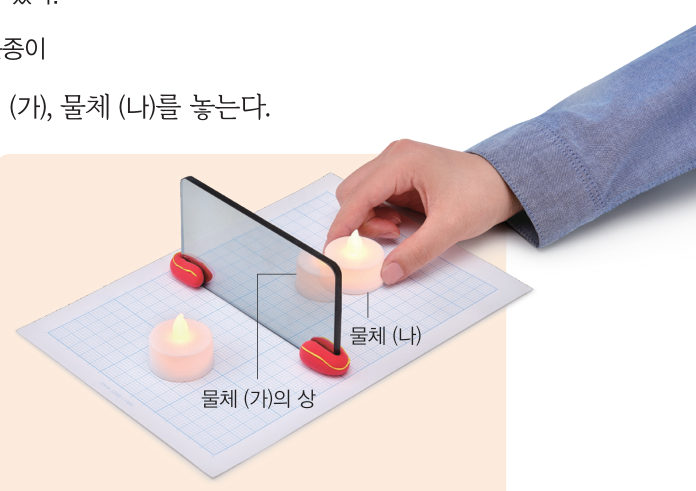
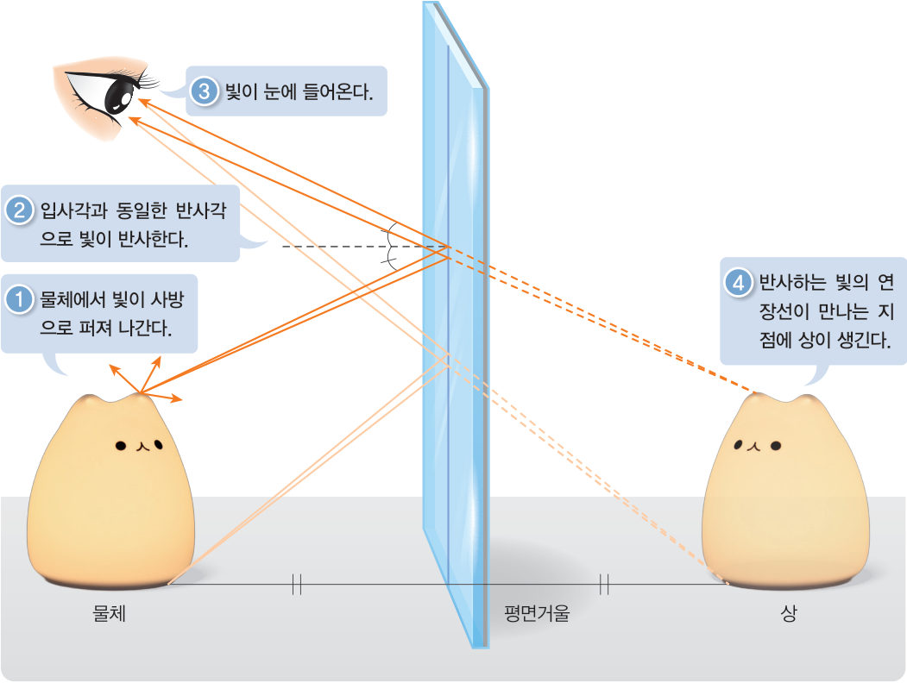

살아있는 교과서 · Ⅲ. 빛과 파동 · 1. 빛 · 02 96~97쪽
평면거울에서
평면거울에서
상이 생기는 원리
“공중에 떠 있네?” 강아지가 공중에 떠 있는 것처럼 보이는 까닭은 무엇일까? 가상 모눈종이에서 물체와 관찰자를 옮기며 반투명 거울 뒤의 상을 찾아보자.
🎯 이 단원을 배우면 — 빛의 반사 법칙을 적용하여 평면거울에서 상이 생기는 원리를 설명할 수 있다.
해 보기 · 결론 도출하기평면거울에 생기는 상의 특징 알아보기 96쪽
거울에 물체를 비춰 보면 거울 속에 물체가 있는 것처럼 보인다. 이때 거울 속에 있는 것처럼 보이는 물체의 모습을 상이라고 한다.
- 반투명 거울을 모눈종이 위에 수직으로 세워 놓은 뒤 거울 앞에 물체 (가)를 놓는다.
- 거울에 비친 물체 (가)의 상과 일치하도록 거울 뒤에 물체 (나)를 놓는다.
- 거울에서 물체 (가)까지의 거리와 물체 (나)까지의 거리를 각각 측정한다.

가상 모눈종이물체를 옮기며 상 찾기
위에서 내려다본 모눈종이예요(한 칸 = 1 cm). 물체 (가)🕯️와 관찰자 👁️를 끌어 옮겨 보자. 물체 (나)를 끌어 상과 딱 겹치게 놓으면 초록색으로 바뀌어요.
거울 ~ 물체 (가)-
거울 ~ 물체 (나)-
상과 (나)-
1거울에 비친 물체 (가)의 상과 물체 (나)의 크기는 . 거울에서 물체 (가)까지의 거리와 상(물체 (나))까지의 거리는 .
2관찰자 👁️의 위치를 바꾸면 상의 위치는 .
교과서평면거울에서 상이 생기는 원리 97쪽
거울 앞에 놓인 물체를 볼 때 그림 3-4와 같이 물체에서 나온 빛 중 일부가 거울 면에서 반사한 뒤 눈으로 들어온다. 이때 눈으로 들어온 빛을 연장하면 한 점에서 만나고, 그 지점에 상이 생긴다. 빛이 거울 면에서 반사할 때 입사각과 반사각이 같으므로 상의 크기는 물체의 크기와 같고, 상에서 거울까지의 거리는 물체에서 거울까지의 거리와 같다. 또한 거울에 생기는 상은 거울을 중심으로 물체와 대칭을 이룬다.

1그림 3-4의 과정을 순서대로 놓으시오.
- 빛이 눈에 들어온다.
- 물체에서 빛이 사방으로 퍼져 나간다.
- 반사하는 빛의 연장선이 만나는 지점에 상이 생긴다.
- 입사각과 같은 반사각으로 빛이 반사한다.
스스로 확인하기96쪽 학습 목표를 달성했는지 확인해 보자 97쪽
1개념 확인 평면거울에 생기는 상의 크기는 물체의 크기와 ( ), 상에서 거울까지의 거리는 물체에서 거울까지의 거리와 ( ).
2사고력 누리가 짧은 평면거울을 보고 있다. 아래 가상 모눈종이처럼 거울 앞 물체 중 누리의 위치에서 상을 관찰할 수 없는 물체가 생기는 까닭을 빛의 반사 법칙을 이용하여 설명해 보자.
5분 테스트평면거울에서 상이 생기는 원리
1평면거울 앞에 물체를 놓으면 같은 크기의 상이 거울 에 생긴다. 물체에서 거울까지의 거리 거울에서 상까지의 거리
③ 평면거울에서 30 cm 떨어진 지점에 인형을 놓을 때 거울과 인형의 상 사이의 거리는 cm
③ 평면거울에서 30 cm 떨어진 지점에 인형을 놓을 때 거울과 인형의 상 사이의 거리는 cm
4평면거울의 상은 거울에서 반사된 광선의 이 만나는 곳에 생긴다. 반사된 빛이 눈에 들어올 때 우리는 거울의 에서 빛이 나오는 것으로 느낀다.
7평면거울의 상은 거울 면을 기준으로 물체와 인 곳에 생기고, 물체와 가 같다. 물체를 거울 쪽으로 이동시키면 상은 거울에 진다.
10숫자 ‘9’를 평면거울에 비추어 보면 어떻게 보일까? (거울은 오른쪽에 세로로 세움)
스스로 정리하기평면거울에서 상이 생기는 원리 110쪽
2평면거울에 의한 상
물체에서 나온 빛이 거울 면에서 반사한 뒤 눈으로 들어오는데, 이 빛을 연장한 선이 만나는 지점에 이/가 생긴다. 평면거울의 상은 물체와 크기와 모양이 같고, 거울을 중심으로 물체와 대칭이다.
| 평가 기준 | 스스로 평가 |
|---|---|
| 과정·기능 관찰에 근거하여 평면거울에 의한 상의 위치를 찾았는가? | |
| 가치·태도 상의 특징을 찾는 활동에 호기심을 갖고 참여했는가? |
제출학생 정보 · 제출하기
모든 활동을 마친 뒤 제출하면 전체가 한 번에 채점되고 피드백이 나타나요. 답안은 선생님 스프레드시트(중2 탭)에 기록돼요.